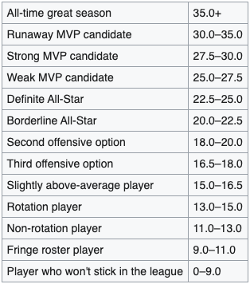

Looking at Numeric Data
The dataset included contained more than 30,000 rows of data, starting from the 1950s. Each row representing a player's season. In order to make sure that we are looking at PER, however the team decided to only include players from the modern era, from the 1990s. This also helps when it comes to predicting a player, as we use more modern data.
Each player contains basic statistics one would find for most NBA games, including Points, Rebounds, Assists, Field Goal Percentage, 3 Point Percentage, Blocks and more, however to predict the efficiency of each player, each player also comes with a stat from the dataset called PER.
PER and how its used in this project
The way data is categorized for this project is based on the calculated PER, or player efficiency rating. This is calculated from multiple different stats, invented by John Hollinger.
After calculation, a decimal value is outputted, and represents a culmination of different stats and advanced stats, however, Hollinger, the inventor of the stat, also included some labels for the outputted PER as well:
For the purposes of the project, we have decided to reduce these categories to 4, in order to get a more accurate model. Below, you will find an application that allows you to select a category we created, and some average stats that are associated with it.
| Number of Players: | |
|---|---|
| PPG | - |
| APG | - |
| RPG | - |
| FG% | - |
| 3P% | - |
| FT% | - |
As seen with the different categories of PER, the most noticeable change is the increase of PPG, or points per game. Also notice how small of a number of players there are when it comes to all star and mvp. For decades now, having an efficiency of a MVP level player is rare and takes a lot to achieve.